prepare..
.. for Industrial Prototyping - TinkerForge
Start 18:15
Sven Ruppert
has been coding java since 1996
Principal IT Consultant
Germany - Munich
@SvenRuppert
Java 8 - TinkerForge
Overview
goals for today
- What is TinkerkForge ?
- basic elements
- BrickViewer / BrickDaemon
- Hello World
- some coding stuff
What is TinkerkForge
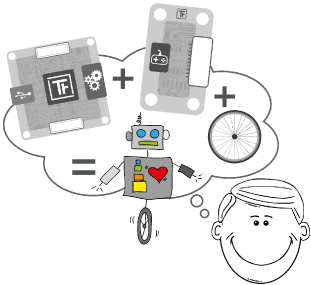
a company from Stukenbrock.. hhmm
What is TinkerkForge - it is in Germany
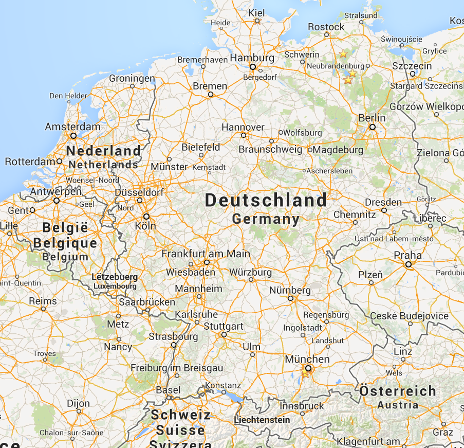
What is TinkerkForge - near Bielefeld
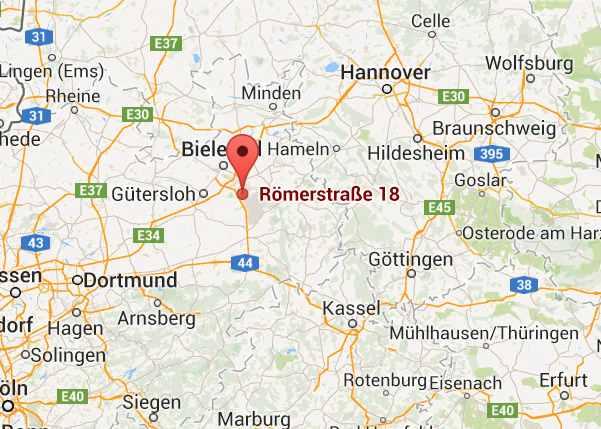
What is TinkerkForge - between Brackel and Borgholzhausen
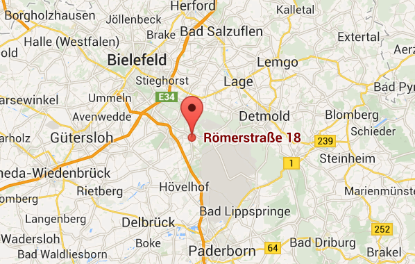
What is TinkerkForge - ok, it is green...

Basic elements - Bricks
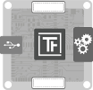
Bricks can be controlled via USB. Each Brick has one task, for example to control DC-, stepper- or servo motors. With Master Bricks it is possible to build a stack of Bricks. Each stack only requires one USB connection. The RED Brick can be used to execute your program directly and realize stand-alone applications without the need for external controlling devices.
Basic elements - Bricklets
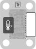
Bricklets extend the features of Bricks, they are connected to Bricks with a Bricklet cable. There are various sensor Bricklets that can measure physical quantities such as temperature, humidity, distance and so on. Another group of Bricklets can control LCDs or more generally read and control analog and digital in- and outputs.
Basic elements - Master Extensions
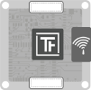
Master Extensions extend the interfaces of single Master Bricks or whole Stacks of Bricks. It is possible to connect stacks among themselves and to control them wirelessly over Ethernet or Wi-Fi.
Basic elements - how to connect
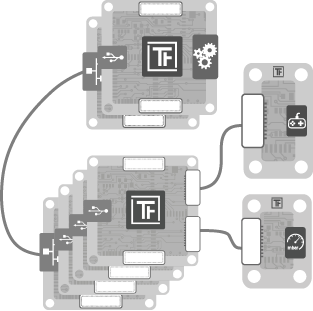
Basic elements - supported platforms
BrickViewer / BrickDaemon
Basic elements - supported programming languages
C/C++, C#, Delphi/Lazarus, Java, JavaScript, LabVIEW, Mathematica, MATLAB/Octave, Perl, PHP, Python, Ruby, Shell, Visual Basic .NET are currently supported.
Is the desired programming language not available, it is possible to control the modules directly over TCP/IP.
Basic elements - Module-Identification
The modules are addressed with a unique ID and not based on the electrical wiring. This allows to change the structure of the system at any time, without the need to change any of the source code.
Master UID / Brick UID Combinations
Basic elements - Connect via (1/3)
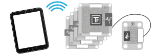
WiFi, Wifi Extensions needed.
Basic elements - Connect via (2/3)
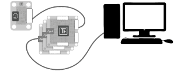
USB, ca 1000 Unts/sec.
Basic elements - Connect via (3/3)
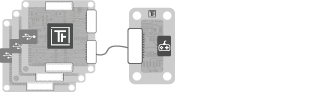
Standalone -> RedBrick finally available
Basic elements - Connect via (3/3)
Standalone -> RedBrick finally available (I have a few here ;-) )
Basic elements - OpenSource
The complete software as well as the hardware modules are open source. This makes it possible to use the Tinkerforge building blocks as a foundation for your own developments. The software is licensed under GPL v2+, and the hardware is licensed under CERN Open Hardware License. Whereas the API Bindings are public domain (i.e. they can be used in a proprietary project).
BrickViewer / BrickDaemon
sudo apt-get install libusb-1.0-0 libudev0 pm-utils
wget http://download.tinkerforge.com/
tools/brickd/linux/brickd_linux_latest_armhf.deb
sudo dpkg -i brickd_linux_latest_armhf.deb
BrickViewer / BrickDaemon
show it please..
Hello World - Temperature pre JDK8
IPConnection ipcon = new IPConnection();
ipcon.setAutoReconnect(true);
int timeoutMS = 2500;
ipcon.setTimeout(timeoutMS);
BrickletTemperature temp = new BrickletTemperature("uid", ipcon);
temp.addTemperatureListener(new BrickletTemperature.TemperatureListener() {
@Override
public void temperature(short temperature) {
int temp = temperature / 100;
System.out.println("temp = " + temp);
}
});
try {
ipcon.connect("localhost", 4229);
} catch (IOException | AlreadyConnectedException e) { e.printStackTrace();}
Hello World - Temperature JDK8
IPConnection ipcon = new IPConnection();
ipcon.setAutoReconnect(true);
int timeoutMS = 2500;
ipcon.setTimeout(timeoutMS);
BrickletTemperature temp = new BrickletTemperature("uid", ipcon);
temp.addTemperatureListener(temperature -> {
int temp1 = temperature / 100;
System.out.println("temp = " + temp1);
});
try {
ipcon.connect("localhost", 4229);
} catch (IOException | AlreadyConnectedException e) { e.printStackTrace(); }
maven
<dependency>
<groupId>com.tinkerforge</groupId>
<artifactId>tinkerforge</artifactId>
<version>2.1.2</version>
<scope>compile</scope>
</dependency>
goals for today
Install BrickViewer and BrickDaemon
goals for today
Install BrickViewer and BrickDaemon
connect the master via USB and check if you could see the master inside the BrickViewer
goals for today
Install BrickViewer and BrickDaemon
connect the master via USB and check if you could see the master inside the BrickViewer
connect the master and AmbientLight, check this -> BrickViewer
goals for today
Install BrickViewer and BrickDaemon
connect the master via USB and check if you could see the master inside the BrickViewer
connect the master and AmbientLight, check this -> BrickViewer
connect the master and AmbientLight, get the data and write it to command line
goals for today
Install BrickViewer and BrickDaemon
connect the master via USB and check if you could see the master inside the BrickViewer
connect the master and AmbientLight, check this -> BrickViewer
connect the master and AmbientLight, get the data and write it to command line
connect the master and AmbientLight, get the data and write it to the LCD
goals for today
Install BrickViewer and BrickDaemon
connect the master via USB and check if you could see the master inside the BrickViewer
connect the master and AmbientLight, check this -> BrickViewer
connect the master and AmbientLight, get the data and write it to command line
connect the master and AmbientLight, get the data and write it to the LCD
connect the master and AmbientLight, add the touch to inc /dec the callbackrate
goals for today
Install BrickViewer and BrickDaemon
connect the master via USB and check if you could see the master inside the BrickViewer
connect the master and AmbientLight, check this -> BrickViewer
connect the master and AmbientLight, get the data and write it to command line
connect the master and AmbientLight, get the data and write it to the LCD
connect the master and AmbientLight, add the touch to inc /dec the callbackrate
play ;-)
<Thank You!>